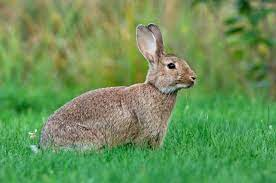
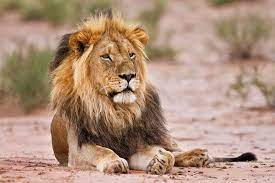
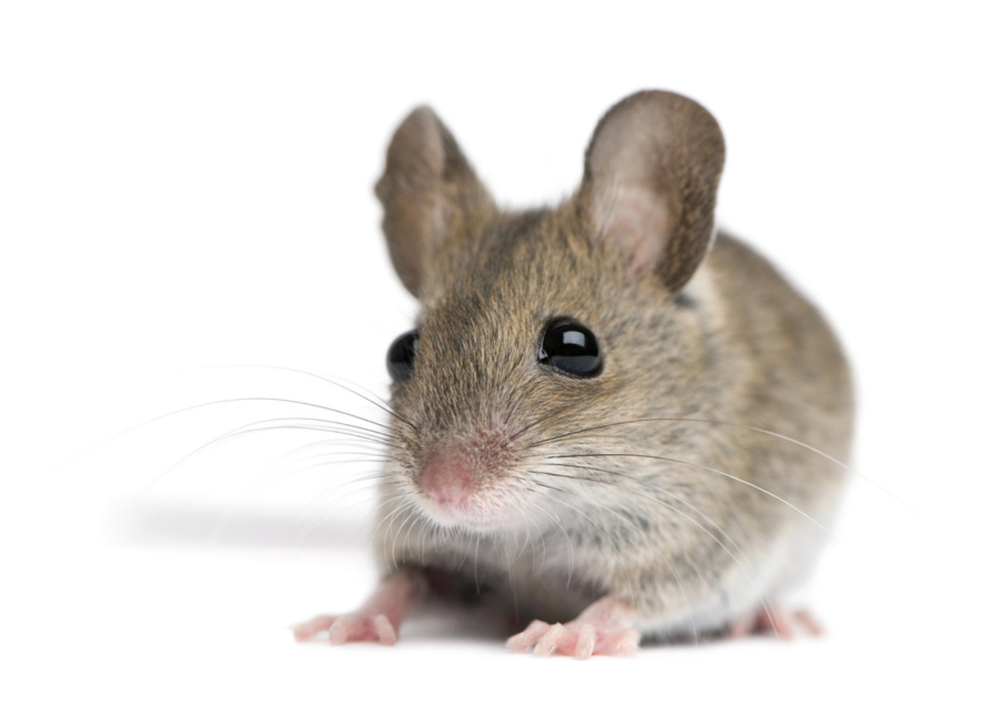
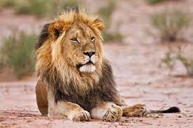
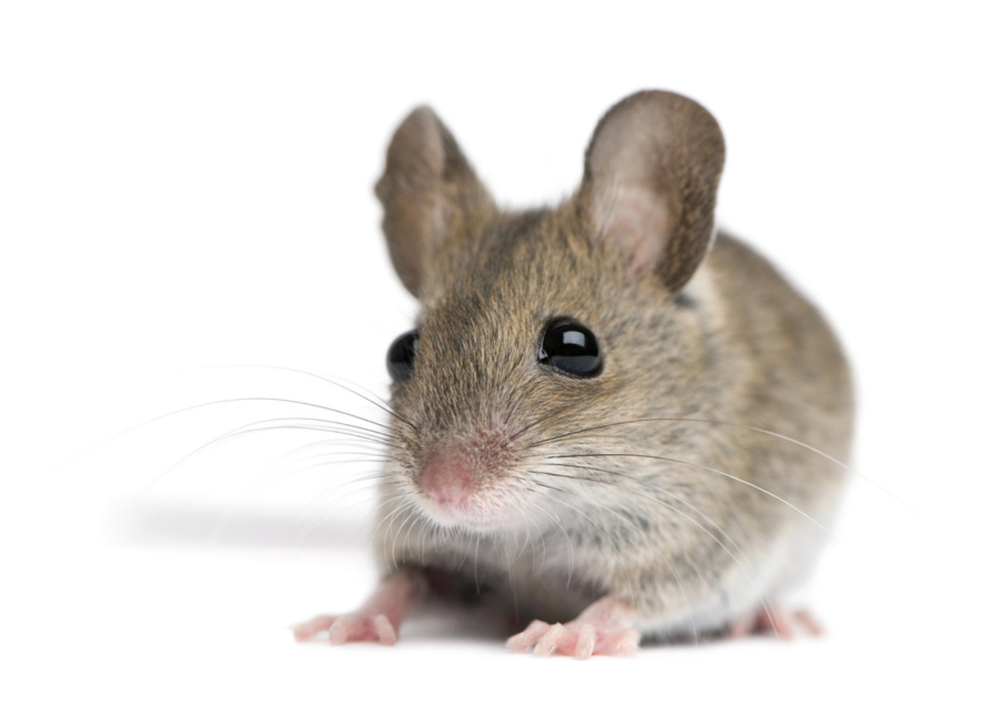

Capy vs andere dieren





Je ziet hier een gehaast en druk konijn.
Konijnen maken je niet zen maar juist gestressed, daarom is capy beter.
Waarom gestressed zijn als je ook kan chillen met een capy?
De capybara is zelfs beter dan de koning van de jungle!
Namelijk omdat deze coole leeuw hier je in 1 hap op kan eten en het
een zeer wild roofdier is, de capybara doet tot tegenstelling helemaal
niks en niemand kwaad!
En dan als laatste de muis.
Een super klein diertje dat door heel veel mensen als vies word gezien.
De capybara is 100x groter en dus ook 100x beter/cuter.

Zie hier de prachtige capy. (het betere dier)